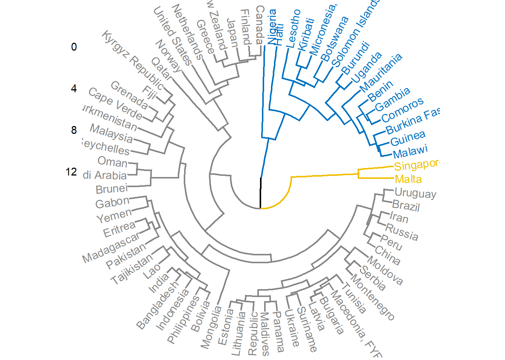

PEC 2 - Visualización de datos
El objetivo de esta actividad es crear tres pequeñas visualizaciones usando técnicas diferentes, en nuestro han sido: dot-density-map, cicular-dendrogram y UpSet (intersecting sets).
Dot density map
Los mapas de densidad de puntos son una forma simple de mostrar las diferencias de densidad en las distribuciones geográficas en un territorio. Este tipo de visualizacion fue y es muy popular, debido a que es fácil de entender e, intuitivamente, podemos ver donde se agrupan los puntos (datos). Hay dos tipos de dot-density-map: los uno-a-uno-dot-density-map o uno-a-muchos-dot-density-maps. Un factor crítico de este tipo de visualización es que han de ser dibujados en un mapa que preserve el tamaño de las área, sino se puede llegar a distorsionar la densidad percibida de los puntos.
Las ventajas de usar este tipo de visualización son: - se puede mapear simples conteos/ratios (por ejemplo, número de coches/coches por km2) - los datos no necesitan tener vinculado unidades de enumeración - funcionan bien en blanco y negro (cuando solo tenemos una clase)
Algunos ejemplos de conjuntos de datos que podríamos usar este tipo de visualizacion: - distribución de McDonalds en USA (1 punto = 1 McDonald) - número de personas, por comarca, Cataluña, 2020 (1 punto 10000 personas) - densidad de población por raza/etnia en New York (1 punto 100 personas)
Limitaciones
Los principales inconvenientes de esta visualización son: - es dificil recuperar datos en concreto - las ubicaciones de los puntos son al azar en una determinada zona
Tipo de datos
Los datos introducidos son cualitativos (por ejemplo, raza/etnia de una persona). Cada dato ha de estar vinculado a un dato geográfico, como la latitud y longitud.A parte, de los datos como tal es necesario tener un mapa como base para poder representar este tipo de datos.
La cantidad de datos no es muy relevante, ya que se puede jugar con la agrupacion de mas de 1 dato en cada punto.
Implementacion
se ha realizado esta visualización en R. El dataset usado para representar el ejemplo es Fast Food Restaurants in America y lo podemos encontrar en: https://www.kaggle.com/datasets/rishidamarla/fast-food-restaurants-in-america/code?resource=download
En este dataset podremos encontrar mas de 10000 diferentes restaurantes fast-food localizados en USA.
#if (!require("tidyverse")) install.packages("tidyverse")
#if (!require("sf")) install.packages("sf")
#if (!require("maps")) install.packages("maps")El primer paso para realizar esta visualización es importar las librerias necesaria a RStudio. En este caso, hemos usado tidyverse, sf y maps.
library(tidyverse) # metapackage of all tidyverse packages
library(sf)
library(maps)A continuación, se ha importado los datos del dataset mensionado anteiormente, y los datos geográficos necesarios para representar los Estados Unidos.
fastRest_raw <- read.csv("FastFoodRestaurants.csv")
fastRest <- filter(fastRest_raw, longitude > -150 & longitude < -50 & latitude > 23 & latitude < 55)
states <- st_as_sf(map("state", plot = FALSE, fill = TRUE))La figura creada es la siguiente:
fig <- function(width, height){
options(repr.plot.width = width, repr.plot.height = height)
}
fig(20,20)
ggplot() + geom_sf(data=states)+
geom_point(data=fastRest,aes(x = longitude, y = latitude), color = "red", alpha = 1/10)+
theme(legend.position = "none") +
ggtitle("Distribution of fast food restaurant in the USA") + theme(plot.title = element_text(hjust = 0.4)) +
theme(panel.background = element_blank(), panel.grid = element_blank()) +
theme(axis.ticks = element_blank(), axis.text = element_blank(), axis.title = element_blank())El mapa obtenido muestra la densidad de restaurantes fast-food. Se puede ver que la mayoria de restaurantes fast-food están localizados en el Este de USA, con otro foco en California. Esto ha sido sencillo de visualizar ya que cuanto mas rojo sea la zona del mapa significa que más cantidad de restaurantes fast-food hay en ese territorio.
Circular dendrogram
Un dendograma es un diagrama que muestra la relación jerárquica entre objetos. El uso principal de los dendrogramas es encontrar lamejor manera de asignar objetos a los clústeres. Es decir, es una manera de visualizar el cluster asignida a cada datos.Los dendrogramas pueden ayudar a tomar la decisión de cuantos clústeres hay.
La ventaja de usar este tipo de visualización son: - es facil de visualizar los clusteres a un mismo nivel - facil de recuperar datos
Por otro lado, los datos han de ser previamente procesados para realizar correctamente el cálculo de las distancias. Además, una gran cantidad de datos resultaría en una visualización imposible de leer, por lo que este tipo de visualización está pensado para datasets pequeños.
Algunos ejemplos de conjuntos de datos que podríamos usar este tipo de visualizacion: - clustering de pasises con datos socio-económicos - número de personas, por comarca, Cataluña, 2020 (1 punto 10000 personas) - densidad de población por raza/etnia en New York (1 punto 100 personas)
Los datos usado para representar esta visualización es “Humanitarian Aid to Underdeveloped Countries” de Kaggle, el link es: https://www.kaggle.com/code/shrutidandagi/clustering-of-the-countries-help-international/data.
dataDend <- read.csv("Country-data.csv")[sample(1:167, 70), ]
dataScale <- dataDend[,2:10]dataScale <- as.data.frame(scale(dataScale)) # Apply scale function
rownames(dataScale) <- dataDend$country
head(dataScale) ## child_mort exports health imports income inflation
## Brazil -0.5349424 -1.1344890 0.6500625 -1.5711409 -0.02520221 0.1432550
## India 0.4094399 -0.6796231 -1.0841035 -0.9114687 -0.59680620 0.2132793
## Zambia 0.9978627 -0.1291972 -0.4407839 -0.7476285 -0.66082132 0.8299846
## Romania -0.7359263 -0.2973829 -0.5491692 -0.4070135 0.16174459 -0.4562514
## South Africa 0.2859437 -0.4502790 0.6255884 -0.8985340 -0.16682857 -0.1098153
## France -0.9126953 -0.5190822 1.6604940 -0.8683529 1.24376999 -0.7609186
## life_expec total_fer gdpp
## Brazil 0.5081259 -0.7688771 -0.04220808
## India -0.3567692 -0.2871461 -0.55360310
## Zambia -1.8919580 1.3989124 -0.54789209
## Romania 0.4540699 -0.8953315 -0.19640536
## South Africa -1.6433007 -0.2931677 -0.24572772
## France 1.2865314 -0.6303794 1.48418926library(stats)
res.dist <- dist(x=dataScale, method="euclidean")
res.hc <- hclust(d =res.dist, method="complete" )library(factoextra)## Welcome! Want to learn more? See two factoextra-related books at https://goo.gl/ve3WBafviz_dend(x=res.hc, cex=0.8, lwd=0.8, k=3,
k_colors="jco",
type = "circular")## Warning: `guides(<scale> = FALSE)` is deprecated. Please use `guides(<scale> =
## "none")` instead.
UpSet Plot
Alternativa de un Venn Diagram, cuando hay varios sets.
#if (!require("UpSetR")) install.packages("UpSetR")
library(UpSetR)set.seed(20190708)
genes <- paste("gene",1:1000,sep="")
x <- list(
A = sample(genes,300),
B = sample(genes,525),
C = sample(genes,440),
D = sample(genes,350)
)upset(fromList(x), order.by = "freq")